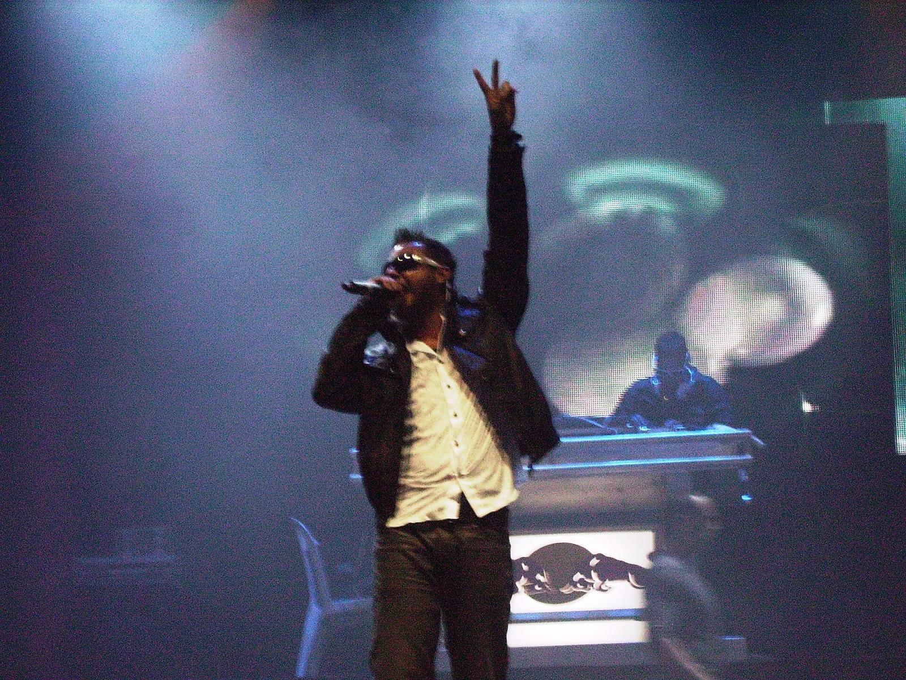

{{SITE}} écrit des chansons pour les trajets de nuit : celles qu'on écoute dans le dernier métro, le front contre la vitre. Après deux disques enregistrés à la maison, le groupe a passé l'hiver dernier dans une ancienne salle de bal pour enregistrer Lumière basse, en direct, presque sans retouche.
Sur scène, ils sont quatre : une basse qui chante, un piano un peu désaccordé, une batterie jouée aux balais, et une voix qui ne force jamais. Le reste, c'est la lumière, réglée chaque soir avec l'équipe de la salle.
« Un disque qui se mérite, et qu'on ne quitte plus. »Le Journal du soir
« La plus belle voix basse entendue cette année. »Radio Quartier
« Sur scène, le temps s'arrête une heure et demie. »Les Nuits